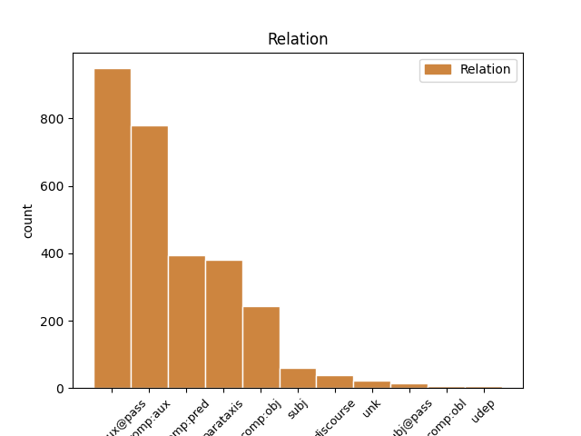
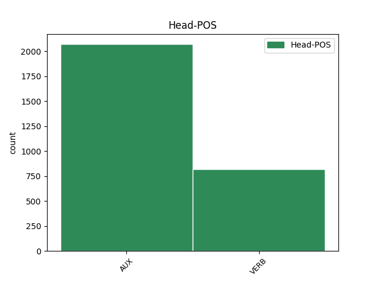
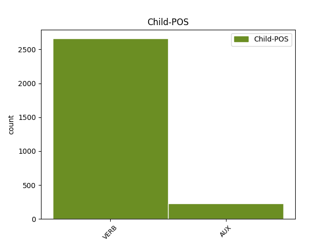

Distribution of features within this leaf



Agreement Rules sorted by frequency.
- When the dependent token is the complement for auxiliary(comp:aux@pass) of the head token,
1 Iespējams _ _ _ _ 0 _ _ _
2 , _ _ _ _ 0 _ _ _
3 ka _ _ _ _ 0 _ _ _
4 pazemība _ _ _ _ 0 _ _ _
5 senajā _ _ _ _ 0 _ _ _
6 Izraēlā _ _ _ _ 0 _ _ _
7 tika _ _ _ _ 0 _ _ _
8 pārņemta _ _ _ _ 0 _ _ _
9 kā _ _ _ _ 0 _ _ _
10 ierēdņu _ _ _ _ 0 _ _ _
11 tikums _ _ _ _ 0 _ _ _
12 no _ _ _ _ 0 _ _ _
13 apkārtējām _ _ _ _ 0 _ _ _
14 kultūrām _ _ _ _ 0 _ _ _
15 , _ _ _ _ 0 _ _ _
16 kas _ _ _ _ 0 _ _ _
17 tika tikt AUX vtnisi130an Evident=Fh|Mood=Ind|Person=3|Polarity=Pos|Tense=Past|VerbForm=Fin|Voice=Act 0 _ _ _
18 piemērota piemērot VERB vmnpdfsnpsnpn Aspect=Perf|Case=Nom|Definite=Ind|Degree=Pos|Gender=Fem|Number=Sing|Polarity=Pos|Tense=Past|VerbForm=Part|Voice=Pass 17 comp:aux@pass _ LvtbNodeId=a-z99-p160s2w18
19 Jahves _ _ _ _ 0 _ _ _
20 reliģijai _ _ _ _ 0 _ _ _
21 ( _ _ _ _ 0 _ _ _
22 Jahve _ _ _ _ 0 _ _ _
23 ienīst _ _ _ _ 0 _ _ _
24 visus _ _ _ _ 0 _ _ _
25 augstprātīgos _ _ _ _ 0 _ _ _
26 un _ _ _ _ 0 _ _ _
27 lepnos _ _ _ _ 0 _ _ _
28 ) _ _ _ _ 0 _ _ _
29 . _ _ _ _ 0 _ _ _
1 Vērmahtam _ _ _ _ 0 _ _ _
2 ienākot _ _ _ _ 0 _ _ _
3 Latvijas _ _ _ _ 0 _ _ _
4 teritorijā _ _ _ _ 0 _ _ _
5 1941. _ _ _ _ 0 _ _ _
6 gada _ _ _ _ 0 _ _ _
7 vasarā _ _ _ _ 0 _ _ _
8 , _ _ _ _ 0 _ _ _
9 Vācijas _ _ _ _ 0 _ _ _
10 vadība _ _ _ _ 0 _ _ _
11 bija būt AUX vcnisii30an Evident=Fh|Mood=Ind|Person=3|Polarity=Pos|Tense=Past|VerbForm=Fin|Voice=Act 0 _ _ _
12 iepriekš _ _ _ _ 0 _ _ _
13 sagatavojusi sagatavot VERB vmnpdfsnasnpn Aspect=Perf|Case=Nom|Definite=Ind|Degree=Pos|Gender=Fem|Number=Sing|Polarity=Pos|Tense=Past|VerbForm=Part|Voice=Act 11 comp:aux _ LvtbNodeId=a-z90-p68s1w13
14 darbības _ _ _ _ 0 _ _ _
15 plānu _ _ _ _ 0 _ _ _
16 kompleksam _ _ _ _ 0 _ _ _
17 ekonomiski _ _ _ _ 0 _ _ _
18 politiskam _ _ _ _ 0 _ _ _
19 pasākumu _ _ _ _ 0 _ _ _
20 kopumam _ _ _ _ 0 _ _ _
21 . _ _ _ _ 0 _ _ _
1 Starpkaru _ _ _ _ 0 _ _ _
2 periodā _ _ _ _ 0 _ _ _
3 un _ _ _ _ 0 _ _ _
4 arī _ _ _ _ 0 _ _ _
5 pēc _ _ _ _ 0 _ _ _
6 Latvijas _ _ _ _ 0 _ _ _
7 valstiskās _ _ _ _ 0 _ _ _
8 neatkarības _ _ _ _ 0 _ _ _
9 atjaunošanas _ _ _ _ 0 _ _ _
10 , _ _ _ _ 0 _ _ _
11 11. _ _ _ _ 0 _ _ _
12 novembris _ _ _ _ 0 _ _ _
13 ir būt AUX vcnipii30an Evident=Fh|Mood=Ind|Person=3|Polarity=Pos|Tense=Pres|VerbForm=Fin|Voice=Act 0 _ _ _
14 atzīmējams atzīmēt VERB vmnpdmsnppnpn Case=Nom|Definite=Ind|Degree=Pos|Gender=Masc|Number=Sing|Polarity=Pos|Tense=Pres|VerbForm=Part|Voice=Pass 13 comp:pred _ LvtbNodeId=a-z89-p255s3w13
15 kā _ _ _ _ 0 _ _ _
16 Varoņu _ _ _ _ 0 _ _ _
17 piemiņas _ _ _ _ 0 _ _ _
18 diena _ _ _ _ 0 _ _ _
19 . _ _ _ _ 0 _ _ _
1 Tiešā _ _ _ _ 0 _ _ _
2 vardarbība _ _ _ _ 0 _ _ _
3 labi _ _ _ _ 0 _ _ _
4 atbilst atbilst VERB vmnipi130an Evident=Fh|Mood=Ind|Person=3|Polarity=Pos|Tense=Pres|VerbForm=Fin|Voice=Act 0 _ _ _
5 vispārīgai _ _ _ _ 0 _ _ _
6 vardarbības _ _ _ _ 0 _ _ _
7 definīcijai _ _ _ _ 0 _ _ _
8 ( _ _ _ _ 0 _ _ _
9 labs _ _ _ _ 0 _ _ _
10 piemērs _ _ _ _ 0 _ _ _
11 tam _ _ _ _ 0 _ _ _
12 ir būt AUX vcnipii30an Evident=Fh|Mood=Ind|Person=3|Polarity=Pos|Tense=Pres|VerbForm=Fin|Voice=Act 4 parataxis _ LvtbNodeId=a-z99-p16s2w12
13 Fretheima _ _ _ _ 0 _ _ _
14 definīcija _ _ _ _ 0 _ _ _
15 ) _ _ _ _ 0 _ _ _
16 . _ _ _ _ 0 _ _ _
1 Es _ _ _ _ 0 _ _ _
2 domāju _ _ _ _ 0 _ _ _
3 , _ _ _ _ 0 _ _ _
4 ka _ _ _ _ 0 _ _ _
5 jūs _ _ _ _ 0 _ _ _
6 visi _ _ _ _ 0 _ _ _
7 saprotat saprast VERB vmnipt12pan Evident=Fh|Mood=Ind|Number=Plur|Person=2|Polarity=Pos|Tense=Pres|VerbForm=Fin|Voice=Act 0 _ _ _
8 , _ _ _ _ 0 _ _ _
9 cik _ _ _ _ 0 _ _ _
10 šis _ _ _ _ 0 _ _ _
11 mehānisms _ _ _ _ 0 _ _ _
12 ir būt AUX vcnipii30an Evident=Fh|Mood=Ind|Person=3|Polarity=Pos|Tense=Pres|VerbForm=Fin|Voice=Act 7 comp:obj _ LvtbNodeId=a-s51-p3s1w12
13 smagnējs _ _ _ _ 0 _ _ _
14 un _ _ _ _ 0 _ _ _
15 pat _ _ _ _ 0 _ _ _
16 nožēlojams _ _ _ _ 0 _ _ _
17 . _ _ _ _ 0 _ _ _
1 Zināmais zināt VERB vmnpdmsnppypn Case=Nom|Definite=Def|Degree=Pos|Gender=Masc|Number=Sing|Polarity=Pos|Tense=Pres|VerbForm=Part|Voice=Pass 4 subj _ LvtbNodeId=a-z83-p126s2w1
2 šai _ _ _ _ 0 _ _ _
3 gadījumā _ _ _ _ 0 _ _ _
4 ir būt AUX vcnipii30an Evident=Fh|Mood=Ind|Person=3|Polarity=Pos|Tense=Pres|VerbForm=Fin|Voice=Act 0 _ _ _
5 O. _ _ _ _ 0 _ _ _
6 Vailda _ _ _ _ 0 _ _ _
7 konteksts _ _ _ _ 0 _ _ _
8 , _ _ _ _ 0 _ _ _
9 savukārt _ _ _ _ 0 _ _ _
10 estētiski _ _ _ _ 0 _ _ _
11 jauno _ _ _ _ 0 _ _ _
12 piesaka _ _ _ _ 0 _ _ _
13 jau _ _ _ _ 0 _ _ _
14 pirmā _ _ _ _ 0 _ _ _
15 izrādes _ _ _ _ 0 _ _ _
16 aina _ _ _ _ 0 _ _ _
17 . _ _ _ _ 0 _ _ _
1 Protams prast VERB vmnpdmsnppnpn Case=Nom|Definite=Ind|Degree=Pos|Gender=Masc|Number=Sing|Polarity=Pos|Tense=Pres|VerbForm=Part|Voice=Pass 4 discourse _ LvtbNodeId=a-z83-p125s1w1|SpaceAfter=No
2 , _ _ _ _ 0 _ _ _
3 process _ _ _ _ 0 _ _ _
4 nav būt AUX vcnipii30ay Evident=Fh|Mood=Ind|Person=3|Polarity=Neg|Tense=Pres|VerbForm=Fin|Voice=Act 0 _ _ _
5 tieša _ _ _ _ 0 _ _ _
6 kopija _ _ _ _ 0 _ _ _
7 . _ _ _ _ 0 _ _ _
1 O. _ _ _ _ 0 _ _ _
2 Dankers _ _ _ _ 0 _ _ _
3 ir _ _ _ _ 0 _ _ _
4 uzrakstījis _ _ _ _ 0 _ _ _
5 grāmatu _ _ _ _ 0 _ _ _
6 , _ _ _ _ 0 _ _ _
7 kas _ _ _ _ 0 _ _ _
8 saucas saukties VERB vmyipi130an Evident=Fh|Mood=Ind|Person=3|Polarity=Pos|Reflex=Yes|Tense=Pres|VerbForm=Fin|Voice=Act 0 _ _ _
9 Lai _ _ _ _ 0 _ _ _
10 vēsture _ _ _ _ 0 _ _ _
11 spriež spriest VERB vmnipt130an Evident=Fh|Mood=Ind|Person=3|Polarity=Pos|Tense=Pres|VerbForm=Fin|Voice=Act 8 unk _ LvtbNodeId=a-z88-p34s2w12
12 tiesu _ _ _ _ 0 _ _ _
13 ( _ _ _ _ 0 _ _ _
14 Toronto _ _ _ _ 0 _ _ _
15 , _ _ _ _ 0 _ _ _
16 1965 _ _ _ _ 0 _ _ _
17 ) _ _ _ _ 0 _ _ _
18 . _ _ _ _ 0 _ _ _
1 Utopiskās _ _ _ _ 0 _ _ _
2 idejas _ _ _ _ 0 _ _ _
3 par _ _ _ _ 0 _ _ _
4 laimīgās _ _ _ _ 0 _ _ _
5 socialistiskās _ _ _ _ 0 _ _ _
6 sabiedrības _ _ _ _ 0 _ _ _
7 celšanu _ _ _ _ 0 _ _ _
8 , _ _ _ _ 0 _ _ _
9 kur _ _ _ _ 0 _ _ _
10 nebūs _ _ _ _ 0 _ _ _
11 rūpju _ _ _ _ 0 _ _ _
12 , _ _ _ _ 0 _ _ _
13 ciešanu _ _ _ _ 0 _ _ _
14 un _ _ _ _ 0 _ _ _
15 nabadzības _ _ _ _ 0 _ _ _
16 , _ _ _ _ 0 _ _ _
17 ir _ _ _ _ 0 _ _ _
18 zaudējušas _ _ _ _ 0 _ _ _
19 jēgu _ _ _ _ 0 _ _ _
20 , _ _ _ _ 0 _ _ _
21 iepriekš _ _ _ _ 0 _ _ _
22 esošais būt VERB vmnpdmsnapypn Aspect=Imp|Case=Nom|Definite=Def|Degree=Pos|Gender=Masc|Number=Sing|Polarity=Pos|Tense=Pres|VerbForm=Part|Voice=Act 29 subj@pass _ LvtbNodeId=a-z31-p118s3w22|SpaceAfter=No
23 , _ _ _ _ 0 _ _ _
24 novēršoties _ _ _ _ 0 _ _ _
25 no _ _ _ _ 0 _ _ _
26 padomiskās _ _ _ _ 0 _ _ _
27 pagātnes _ _ _ _ 0 _ _ _
28 , _ _ _ _ 0 _ _ _
29 ir būt AUX vcnipii30an Evident=Fh|Mood=Ind|Person=3|Polarity=Pos|Tense=Pres|VerbForm=Fin|Voice=Act 0 _ _ _
30 sagrauts _ _ _ _ 0 _ _ _
31 , _ _ _ _ 0 _ _ _
32 bet _ _ _ _ 0 _ _ _
33 vēl _ _ _ _ 0 _ _ _
34 nav _ _ _ _ 0 _ _ _
35 izveidojusies _ _ _ _ 0 _ _ _
36 stabila _ _ _ _ 0 _ _ _
37 vērtību _ _ _ _ 0 _ _ _
38 sistēma _ _ _ _ 0 _ _ _
39 , _ _ _ _ 0 _ _ _
40 ar _ _ _ _ 0 _ _ _
41 ko _ _ _ _ 0 _ _ _
42 identificēties _ _ _ _ 0 _ _ _
43 . _ _ _ _ 0 _ _ _
1 Es _ _ _ _ 0 _ _ _
2 domāju _ _ _ _ 0 _ _ _
3 , _ _ _ _ 0 _ _ _
4 ka _ _ _ _ 0 _ _ _
5 daudz _ _ _ _ 0 _ _ _
6 pareizāk _ _ _ _ 0 _ _ _
7 būtu _ _ _ _ 0 _ _ _
8 likvidēt _ _ _ _ 0 _ _ _
9 šīs _ _ _ _ 0 _ _ _
10 sekas _ _ _ _ 0 _ _ _
11 , _ _ _ _ 0 _ _ _
12 un _ _ _ _ 0 _ _ _
13 te _ _ _ _ 0 _ _ _
14 es _ _ _ _ 0 _ _ _
15 pilnīgi _ _ _ _ 0 _ _ _
16 piekrītu piekrist VERB vmnisi11san Evident=Fh|Mood=Ind|Number=Sing|Person=1|Polarity=Pos|Tense=Past|VerbForm=Fin|Voice=Act 0 _ _ _
17 Muciņa _ _ _ _ 0 _ _ _
18 kunga _ _ _ _ 0 _ _ _
19 sacītajam sacīt VERB vmnpdmsdpsypn Aspect=Perf|Case=Dat|Definite=Def|Degree=Pos|Gender=Masc|Number=Sing|Polarity=Pos|Tense=Past|VerbForm=Part|Voice=Pass 16 comp:obl _ LvtbNodeId=a-s14-p121s1w19
20 par _ _ _ _ 0 _ _ _
21 profilaksi _ _ _ _ 0 _ _ _
22 . _ _ _ _ 0 _ _ _
1 Krāsojot _ _ _ _ 0 _ _ _
2 Aleksandru _ _ _ _ 0 _ _ _
3 Čaku _ _ _ _ 0 _ _ _
4 , _ _ _ _ 0 _ _ _
5 ko _ _ _ _ 0 _ _ _
6 krāsojamā _ _ _ _ 0 _ _ _
7 grāmatā _ _ _ _ 0 _ _ _
8 " _ _ _ _ 0 _ _ _
9 Reiz _ _ _ _ 0 _ _ _
10 dzīvoja dzīvot VERB vmnisi230an Evident=Fh|Mood=Ind|Person=3|Polarity=Pos|Tense=Past|VerbForm=Fin|Voice=Act 13 udep _ LvtbNodeId=a-p15397-p4s1w10
11 Čaks _ _ _ _ 0 _ _ _
12 " _ _ _ _ 0 _ _ _
13 iemiesojis iemiesot VERB vmnpdmsnasnpn Aspect=Perf|Case=Nom|Definite=Ind|Degree=Pos|Gender=Masc|Number=Sing|Polarity=Pos|Tense=Past|VerbForm=Part|Voice=Act 0 _ _ _
14 mākslinieks _ _ _ _ 0 _ _ _
15 Vilipsōns _ _ _ _ 0 _ _ _
16 , _ _ _ _ 0 _ _ _
17 darbnīcas _ _ _ _ 0 _ _ _
18 dalībnieki _ _ _ _ 0 _ _ _
19 varēs _ _ _ _ 0 _ _ _
20 izzināt _ _ _ _ 0 _ _ _
21 slavenā _ _ _ _ 0 _ _ _
22 dzejnieka _ _ _ _ 0 _ _ _
23 bērnības _ _ _ _ 0 _ _ _
24 piedzīvojumus _ _ _ _ 0 _ _ _
25 . _ _ _ _ 0 _ _ _
Disagree Examples:
1 Majestātiska _ _ _ _ 0 _ _ _
2 savā _ _ _ _ 0 _ _ _
3 garajā _ _ _ _ 0 _ _ _
4 , _ _ _ _ 0 _ _ _
5 krāšņajā _ _ _ _ 0 _ _ _
6 pašas _ _ _ _ 0 _ _ _
7 Atēnas _ _ _ _ 0 _ _ _
8 austajā _ _ _ _ 0 _ _ _
9 tērpā _ _ _ _ 0 _ _ _
10 , _ _ _ _ 0 _ _ _
11 viņa _ _ _ _ 0 _ _ _
12 brauc _ _ _ _ 0 _ _ _
13 lejup _ _ _ _ 0 _ _ _
14 no _ _ _ _ 0 _ _ _
15 Olimpa _ _ _ _ 0 _ _ _
16 ratos _ _ _ _ 0 _ _ _
17 , _ _ _ _ 0 _ _ _
18 kuros _ _ _ _ 0 _ _ _
19 ir būt AUX vcnipii30an Evident=Fh|Mood=Ind|Person=3|Polarity=Pos|Tense=Pres|VerbForm=Fin|Voice=Act 0 _ _ _
20 iejūgti iejūgt VERB vmnpdmpnpsnpn Aspect=Perf|Case=Nom|Definite=Ind|Degree=Pos|Gender=Masc|Number=Plur|Polarity=Pos|Tense=Past|VerbForm=Part|Voice=Pass 19 comp:aux@pass _ LvtbNodeId=a-c15-p10s4w20
21 2 _ _ _ _ 0 _ _ _
22 nemirstīgi _ _ _ _ 0 _ _ _
23 zirgi _ _ _ _ 0 _ _ _
24 . _ _ _ _ 0 _ _ _
1 No _ _ _ _ 0 _ _ _
2 tīra _ _ _ _ 0 _ _ _
3 sudraba _ _ _ _ 0 _ _ _
4 ir _ _ _ _ 0 _ _ _
5 rati _ _ _ _ 0 _ _ _
6 , _ _ _ _ 0 _ _ _
7 no _ _ _ _ 0 _ _ _
8 tīra _ _ _ _ 0 _ _ _
9 zelta _ _ _ _ 0 _ _ _
10 ir _ _ _ _ 0 _ _ _
11 riteņi _ _ _ _ 0 _ _ _
12 , _ _ _ _ 0 _ _ _
13 bet _ _ _ _ 0 _ _ _
14 riteņu _ _ _ _ 0 _ _ _
15 spieķi _ _ _ _ 0 _ _ _
16 mirdz mirdzēt VERB vmnipi330an Evident=Fh|Mood=Ind|Person=3|Polarity=Pos|Tense=Pres|VerbForm=Fin|Voice=Act 0 _ _ _
17 varā _ _ _ _ 0 _ _ _
18 kalti kalt VERB vmnpdmpnpsnpn Aspect=Perf|Case=Nom|Definite=Ind|Degree=Pos|Gender=Masc|Number=Plur|Polarity=Pos|Tense=Past|VerbForm=Part|Voice=Pass 16 comp:pred _ LvtbNodeId=a-c15-p10s5w18|SpaceAfter=No
19 . _ _ _ _ 0 _ _ _
1 Ķīnā _ _ _ _ 0 _ _ _
2 tēja _ _ _ _ 0 _ _ _
3 vēsturiski _ _ _ _ 0 _ _ _
4 tiek tikt AUX vtnipi130an Evident=Fh|Mood=Ind|Person=3|Polarity=Pos|Tense=Pres|VerbForm=Fin|Voice=Act 0 _ _ _
5 dalīta dalīt VERB vmnpdfsnpsnpn Aspect=Perf|Case=Nom|Definite=Ind|Degree=Pos|Gender=Fem|Number=Sing|Polarity=Pos|Tense=Past|VerbForm=Part|Voice=Pass 4 comp:aux@pass _ LvtbNodeId=a-c2-p9s1w5
6 pēc _ _ _ _ 0 _ _ _
7 uzlējumu _ _ _ _ 0 _ _ _
8 skaita _ _ _ _ 0 _ _ _
9 . _ _ _ _ 0 _ _ _
1 Pirmais _ _ _ _ 0 _ _ _
2 uzlējums _ _ _ _ 0 _ _ _
3 ir būt AUX vcnipii30an Evident=Fh|Mood=Ind|Person=3|Polarity=Pos|Tense=Pres|VerbForm=Fin|Voice=Act 0 _ _ _
4 paredzēts paredzēt VERB vmnpdmsnpsnpn Aspect=Perf|Case=Nom|Definite=Ind|Degree=Pos|Gender=Masc|Number=Sing|Polarity=Pos|Tense=Past|VerbForm=Part|Voice=Pass 3 comp:aux@pass _ LvtbNodeId=a-c2-p9s2w4
5 tējas _ _ _ _ 0 _ _ _
6 noskalošanai _ _ _ _ 0 _ _ _
7 , _ _ _ _ 0 _ _ _
8 tādēļ _ _ _ _ 0 _ _ _
9 tas _ _ _ _ 0 _ _ _
10 nav _ _ _ _ 0 _ _ _
11 dzerams _ _ _ _ 0 _ _ _
12 un _ _ _ _ 0 _ _ _
13 uzreiz _ _ _ _ 0 _ _ _
14 tiek _ _ _ _ 0 _ _ _
15 liets _ _ _ _ 0 _ _ _
16 ārā _ _ _ _ 0 _ _ _
17 no _ _ _ _ 0 _ _ _
18 tējkannas _ _ _ _ 0 _ _ _
19 . _ _ _ _ 0 _ _ _
1 Pirmais _ _ _ _ 0 _ _ _
2 uzlējums _ _ _ _ 0 _ _ _
3 ir _ _ _ _ 0 _ _ _
4 paredzēts _ _ _ _ 0 _ _ _
5 tējas _ _ _ _ 0 _ _ _
6 noskalošanai _ _ _ _ 0 _ _ _
7 , _ _ _ _ 0 _ _ _
8 tādēļ _ _ _ _ 0 _ _ _
9 tas _ _ _ _ 0 _ _ _
10 nav _ _ _ _ 0 _ _ _
11 dzerams _ _ _ _ 0 _ _ _
12 un _ _ _ _ 0 _ _ _
13 uzreiz _ _ _ _ 0 _ _ _
14 tiek tikt AUX vtnipi130an Evident=Fh|Mood=Ind|Person=3|Polarity=Pos|Tense=Pres|VerbForm=Fin|Voice=Act 0 _ _ _
15 liets liet VERB vmnpdmsnpsnpn Aspect=Perf|Case=Nom|Definite=Ind|Degree=Pos|Gender=Masc|Number=Sing|Polarity=Pos|Tense=Past|VerbForm=Part|Voice=Pass 14 comp:aux@pass _ LvtbNodeId=a-c2-p9s2w15
16 ārā _ _ _ _ 0 _ _ _
17 no _ _ _ _ 0 _ _ _
18 tējkannas _ _ _ _ 0 _ _ _
19 . _ _ _ _ 0 _ _ _